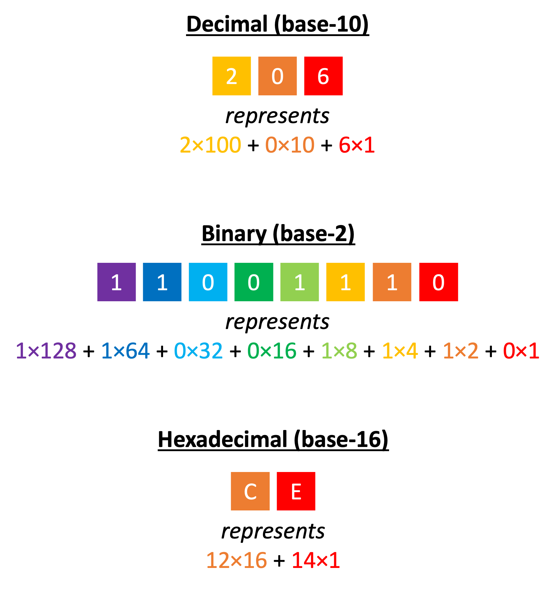

Counting in binary (also called base-2) is similar to counting in decimal (our normal number system, also called base-10).
The only difference is that instead of the digits representing powers of 10 (..., 1000, 100, 10, 1) they represent powers of 2 (..., 8, 4, 2, 1).
 The hexadecimal number system (also called base-16) is a way of writing numbers using 16 different digits.
The hexadecimal number system (also called base-16) is a way of writing numbers using 16 different digits.
The digits are: 0123456789ABCDEF. A = 10, B = 11, ..., F = 15.
In hexadecimal, the digits represent powers of 16 (..., 4096, 256, 16, 1).
Each digit in hexadecimal exactly corresponds to one nibble (four bits).
This means that it is very easy to convert between binary and hexadecimal,
as each group of four binary digits con be converted to one hexadecimal digit.
Diagram 1 shows the number 206 in decimal, binary, and hexadecimal.
 Diagram 1
Diagram 1

A computer can only understand binary machine code, but programmers often write machine code in hexadecimal because:
- Hexadecimal is four times shorter than binary
- It's easy to convert from hexadecimal into binary
 Subscript notation is a way of writing the base a number has been represented in so that we don't get confused.
Subscript notation is a way of writing the base a number has been represented in so that we don't get confused.
The base is written next to the number in a small font:
- 20610 means "206 in base-10 (decimal)"
- 110011102 means "11001110 in base-2 (binary)"
- CE16 means "CE in base-16 (hexadecimal)"
 Convert
Convert 9D16 to binary.
Because each hexadecimal digit is equivalent to a nibble, we can convert each digit to four binary digits:
916 = 910 = 8 + 1 = 10012
D16 = 1310 = 8 + 4 + 1 = 11012
So, 9D16 = 100111012